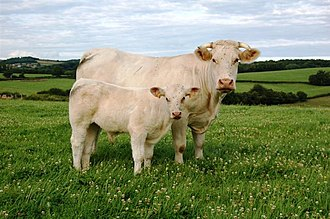

CHAROLAIS
Weight:
1200 to 1800 pounds
Height :
4.9 to 5.9 feet
Length:
5 to 7.5 feet
Color:
white or cream-colored coat
Longevity:
10 – 15 years.
Charolais personality
While personality traits can vary among individual animals, Charolais cows are generally known for their docile and calm demeanor. They are often described as gentle, easy-going, and adaptable animals. Charolais cattle are bred primarily for their meat production, so they are typically raised in environments where they are well cared for and provided with ample space and resources.
Charolais cows are known for their maternal instincts and can be protective of their calves. They are also known to be quite social animals, often forming strong bonds within their herds. Additionally, Charolais cattle are known for their intelligence and can be trained to some extent, particularly for handling and management purposes.
What to expect
1.Large Size: Charolais cattle are known for their impressive size and muscular build. As one of the largest beef cattle breeds, they can reach substantial weights, especially when raised for meat production.
2.Docile Temperament: Charolais cows generally exhibit a calm and docile temperament, making them easier to handle compared to more aggressive breeds. This characteristic can be particularly beneficial during handling, transportation, and management activities.
3.Maternal Instincts: Charolais cows are known for their strong maternal instincts. They typically exhibit attentive and protective behaviors towards their calves, ensuring their well-being and safety within the herd.
4.Adaptability: Charolais cattle are adaptable to various environmental conditions and management systems. They can thrive in different climates and terrain types, making them suitable for a wide range of farming and ranching operations.
5.Growth Rate: Charolais cattle are prized for their rapid growth and efficient feed conversion. They tend to reach market weight relatively quickly compared to some other beef cattle breeds, making them economically attractive for meat production.
History of the Charolais
Early Origins: The exact origins of Charolais cattle are somewhat unclear, but they are believed to have descended from ancient cattle breeds native to the Charolles region of France. These early cattle were likely of the "Charolais type," which were renowned for their large size and robustness.
Selective Breeding: Over time, farmers in the Charolles region began selectively breeding their cattle for traits such as size, muscle development, and meat quality. The goal was to develop a breed of cattle that was well-suited for meat production and could thrive in the local agricultural conditions.
Introduction of Charolais Breed Standards: Formal breed standards for Charolais cattle began to emerge in the 18th and 19th centuries. Efforts were made to standardize the characteristics of the breed, including its white coat color, sturdy frame, and muscular build.
Introduction of Charolais Breed Standards: Formal breed standards for Charolais cattle began to emerge in the 18th and 19th centuries. Efforts were made to standardize the characteristics of the breed, including its white coat color, sturdy frame, and muscular build.